deepSSF Data Prep
![]()
Here we prepare the data for fitting a deepSSF model. We load the GPS data and tidy it, create a trajectory object containing a series of steps and read in the environmental layers. For each observed step we crop out local subsets of the environmental layers, centred on the step’s location. For every step we will then have the surrounding environmental information stored as a stack of small rasters, with the ‘target’ of what we’re trying to predict (the actual location of the next step) as a raster layer as well, with all cells being 0 except the observed next location, which is 1. These, along with temporal covariates and the previous bearing, will be the input data for the deepSSF model.
Loading packages
Import data
New names:
Rows: 133161 Columns: 11
── Column specification
──────────────────────────────────────────────────────── Delimiter: "," chr
(2): node, dates dbl (7): ...1, lat, lon, height, accuracy, heading, speed dttm
(2): timestamp, DateTime
ℹ Use `spec()` to retrieve the full column specification for this data. ℹ
Specify the column types or set `show_col_types = FALSE` to quiet this message.
• `` -> `...1`Tidy data
Code
# remove individuals that have poor data quality or less than about 3 months of data.
# The "2014.GPS_COMPACT copy.csv" string is a duplicate of ID 2024, so we also exclude it
buffalo <- buffalo %>% filter(!node %in% c("2014.GPS_COMPACT copy.csv",
# 2005, 2014, 2018, 2021, 2022, 2024,
2029, 2043, 2265, 2284, 2346, 2354))
# arrange by time and exclude any duplicate timestamps (within the same individual's data)
buffalo <- buffalo %>%
group_by(node) %>%
arrange(DateTime, .by_group = T) %>%
distinct(DateTime, .keep_all = T) %>%
arrange(node) %>%
mutate(ID = node)
# keep only the relevant columns
buffalo_clean <- buffalo[, c(12, 2, 4, 3)]
# rename the columns
colnames(buffalo_clean) <- c("id", "time", "lon", "lat")
# convert the time to the correct timezone
attr(buffalo_clean$time, "tzone") <- "Australia/Queensland"
head(buffalo_clean)[1] "Australia/Queensland"Setup trajectory
Use the amt package to create a trajectory object from the cleaned data.
Plot the data coloured by time
Read in the environmental covariates
Code
ndvi_projected <- rast("mapping/cropped rasters/ndvi_GEE_projected_watermask20230207.tif")
terra::time(ndvi_projected) <- as.POSIXct(lubridate::ymd("2018-01-01") + months(0:23))
slope <- rast("mapping/cropped rasters/slope_raster.tif")
veg_herby <- rast("mapping/cropped rasters/veg_herby.tif")
canopy_cover <- rast("mapping/cropped rasters/canopy_cover.tif")
# change the names (these will become the column names when extracting
# covariate values at the used and random steps)
names(ndvi_projected) <- rep("ndvi", terra::nlyr(ndvi_projected))
names(slope) <- "slope"
names(veg_herby) <- "veg_herby"
names(canopy_cover) <- "canopy_cover"
# to plot the rasters
plot(ndvi_projected)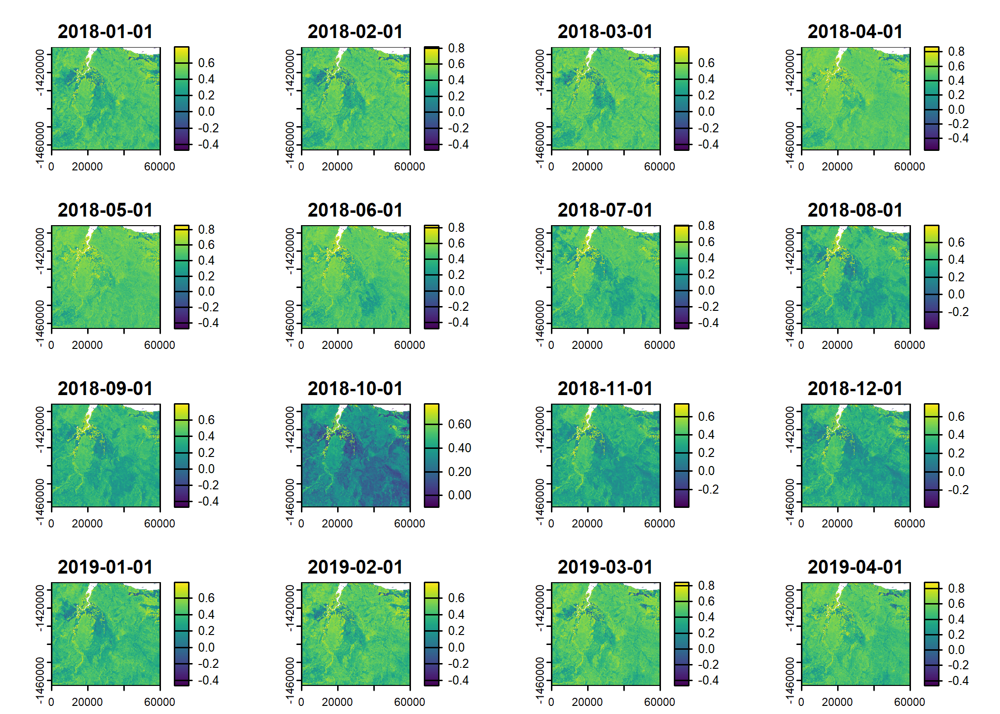
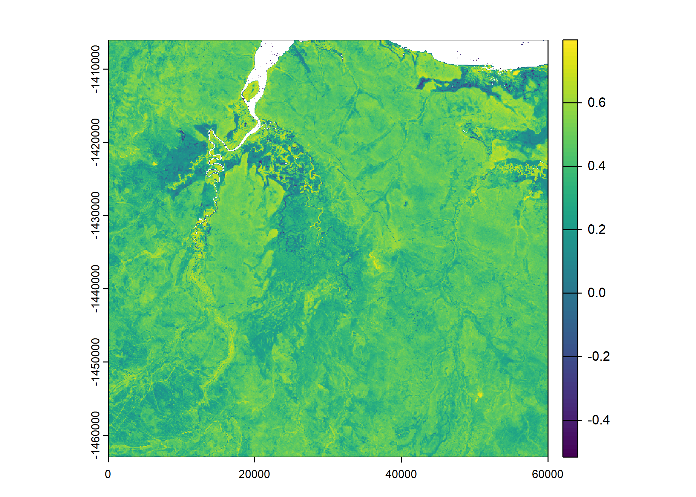


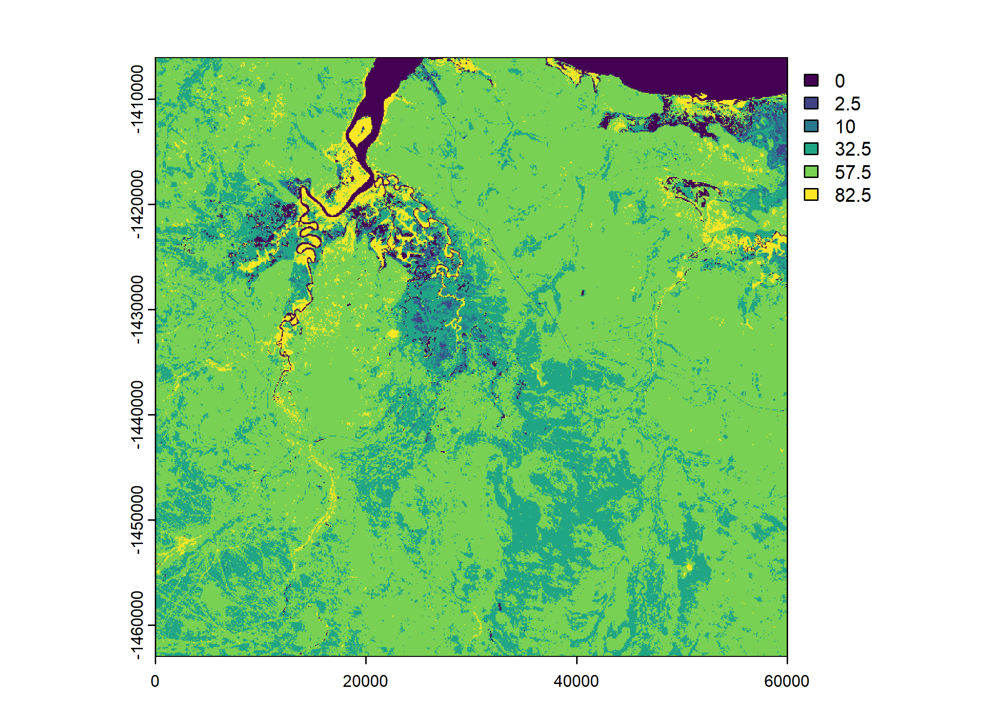
Generating the data to fit a deepSSF model
Create a steps object to check the step lengths
Code
# nest the data by individual
buffalo_all_nested <- buffalo_all %>% arrange(id) %>% nest(data = -"id")
buffalo_all_nested_steps <- buffalo_all_nested %>%
mutate(steps = map(data, function(x)
x %>%
# track_resample(rate = hours(1), tolerance = minutes(10)) %>%
steps()))
# unnest the data after creating 'steps' objects
buffalo_all_steps <- buffalo_all_nested_steps %>%
amt::select(id, steps) %>%
amt::unnest(cols = steps)
head(buffalo_all_steps)Plot step lengths
Code
# plot step lengths
buffalo_all_steps %>%
filter(sl_ < 2000) %>%
ggplot() +
geom_density(aes(x = sl_), #, bins = 50
fill = "skyblue", colour = "skyblue", alpha = 0.75) +
scale_x_continuous("Step length (m)") + #, limits = c(-25, 1250)
scale_y_continuous("Density") +
ggtitle("Step lengths") +
theme_classic()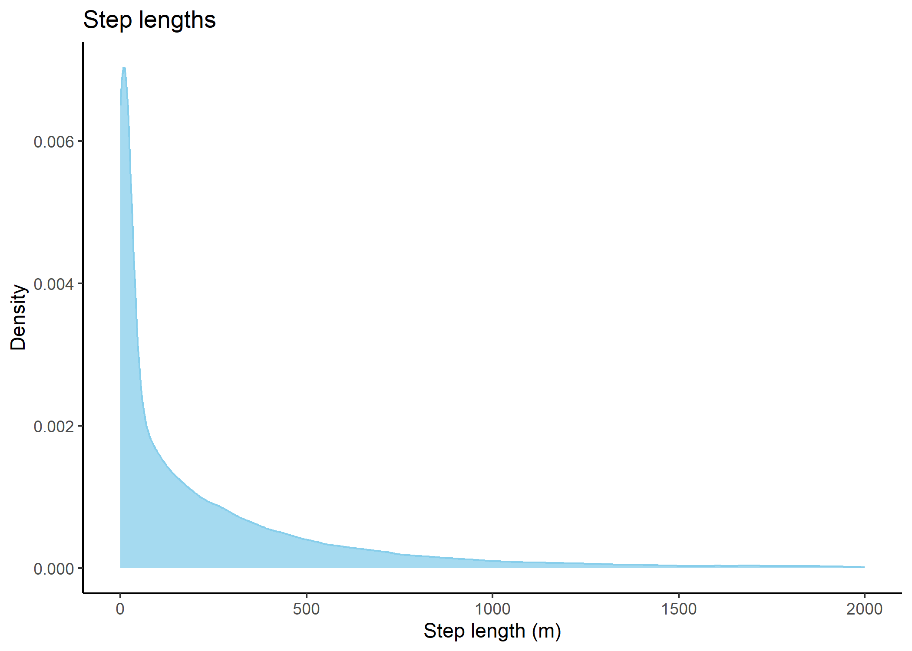
Code
[1] TRUECode
# buffer distance (add the resolution of the cell/2 as we want a centre cell)
buffer <- 1250 + (res/2)
# calculate proportion
prop_steps <- buffalo_all_steps %>% filter(sl_ < buffer) %>% nrow() / buffalo_all_steps %>% nrow()
print(paste0("Proportion of steps less than ", buffer, "m: ", round(prop_steps, 4)))[1] "Proportion of steps less than 1262.5m: 0.9573"Code
[1] "Distance to the corner: 1785.44"In our case 95% of the steps were less than a distance of 1262.5m, which would mean that including 101 x 101 cells (which would be 2525 m x 2525 m) would include at least 95% of the steps.
Note: as 1262.5 m is the shortest distance to the boundary, and it is further to a corner (which is 1786 m away), which means we will actually be including more than 95% of the steps.
Set up the spatial extent of the local covariates
We calculate the number of cells in each axis, and set the lag between locations. Typically this will just be 1, as we want the next-step to be the target. However, it may be possible to improve model training by using different lags and including the time difference between locations as a covariate. I expect that this would help to predict across different time scales and not be restricted to the time scale that the data was collected at.
Loop over each individual and save the local rasters
This is the main function of the script. It loops over each individual and calculates step level information, such as the location and time of the next step (x2, y2, t2), step length, turning angle, and different time components.
It also determines where to crop the local layers by subtracting and adding the buffer distance from the location of each step. It then crops out the local layers for each step and saves them as a list entry into the data frame.
It then creates a raster stack (with the number of layers equal to the number of steps) for each covariate and saves it as a tif.
For each individual, this will therefore create a csv containing the step level information, and a tif for each covariate containing the local layers for each step.
It takes quite a while to run, around 1 hour per individual in our case, so we will illustrate the function with 10 steps per individual. Uncomment the line specified in the loop to use the full dataset.
Code
for(i in 1:length(buffalo_ids)) {
buffalo_data <- buffalo_all %>% filter(id == buffalo_ids[i])
# all data for that individual
buffalo_data <- buffalo_data %>% arrange(t_)
# to use a subset of the data for that individual for testing
# COMMENT THIS LINE OUT TO USE THE FULL DATASET
buffalo_data <- buffalo_data %>% arrange(t_) |> slice(1:10)
n_samples <- nrow(buffalo_data)
tic()
buffalo_data_covs <- buffalo_data %>% mutate(
x1_ = x_,
y1_ = y_,
x2_ = lead(x1_, n = hourly_lag, default = NA),
y2_ = lead(y1_, n = hourly_lag, default = NA),
x2_cent = x2_ - x1_,
y2_cent = y2_ - y1_,
t2_ = lead(t_, n = hourly_lag, default = NA),
t_diff = round(difftime(t2_, t_, units = "hours"),0),
hour_t1 = lubridate::hour(t_),
yday_t1 = lubridate::yday(t_),
hour_t2 = lubridate::hour(t2_),
hour_t2_sin = sin(2*pi*hour_t2/24),
hour_t2_cos = cos(2*pi*hour_t2/24),
yday_t2 = lubridate::yday(t2_),
yday_t2_sin = sin(2*pi*yday_t2/365.25),
yday_t2_cos = cos(2*pi*yday_t2/365.25),
sl = c(sqrt(diff(y_)^2 + diff(x_)^2), NA),
log_sl = log(sl),
bearing = c(atan2(diff(y_), diff(x_)), NA),
bearing_sin = sin(bearing),
bearing_cos = cos(bearing),
ta = c(NA, ifelse(
diff(bearing) > pi, diff(bearing)-(2*pi), ifelse(
diff(bearing) < -pi, diff(bearing)+(2*pi), diff(bearing)))),
cos_ta = cos(ta),
# extent for cropping the spatial covariates
x_min = x_ - buffer,
x_max = x_ + buffer,
y_min = y_ - buffer,
y_max = y_ + buffer,
# crop out and store the local covariates centered on the animal's location
# with an extent set in the previous chunk
) %>% rowwise() %>% mutate(
extent_00centre = list(ext(x_min - x_, x_max - x_, y_min - y_, y_max - y_)),
# NDVI
ndvi_index = which.min(abs(difftime(t_, terra::time(ndvi_projected)))),
ndvi_cent = list({
ndvi_cent = crop(ndvi_projected[[ndvi_index]], ext(x_min, x_max, y_min, y_max))
ext(ndvi_cent) <- extent_00centre
ndvi_cent
}),
# herbaceous vegetation
veg_herby_cent = list({
veg_herby_cent = crop(veg_herby, ext(x_min, x_max, y_min, y_max))
ext(veg_herby_cent) <- extent_00centre
veg_herby_cent
}),
# canopy cover
canopy_cover_cent = list({
canopy_cover_cent = crop(canopy_cover, ext(x_min, x_max, y_min, y_max))
ext(canopy_cover_cent) <- extent_00centre
canopy_cover_cent
}),
# slope
slope_cent = list({
slope_cent <- crop(slope, ext(x_min, x_max, y_min, y_max))
ext(slope_cent) <- extent_00centre
slope_cent
}),
# rasterised location of the next step - centred on (0,0)
points_vect_cent = list(terra::vect(cbind(x2_ - x_, y2_ - y_), type = "points", crs = "EPSG:3112")),
pres_cent = list(rasterize(points_vect_cent, ndvi_cent, background=0))
) %>% ungroup() # to remove the 'rowwise' class
toc()
# remove steps that fall outside of the local spatial extent
buffalo_data_covs <- buffalo_data_covs %>%
filter(x2_cent > -buffer & x2_cent < buffer & y2_cent > -buffer & y2_cent < buffer) %>%
drop_na(ta)
# remove the columns that are no longer needed
buffalo_data_df <- buffalo_data_covs %>%
dplyr::select(-extent_00centre,
-ndvi_cent,
-veg_herby_cent,
-canopy_cover_cent,
-slope_cent,
-points_vect_cent,
-pres_cent
)
# save the data
write_csv(buffalo_data_df, paste0("buffalo_local_data_id/website_temp/buffalo_", buffalo_ids[i],
"_data_df_lag_", hourly_lag, "hr_n", n_samples, ".csv"))
# saving the raster objects
rast(buffalo_data_covs$ndvi_cent) %>%
writeRaster(paste0("buffalo_local_layers_id/buffalo_", buffalo_ids[i], "_ndvi_cent",
nxn_cells, "x", nxn_cells, "_lag_", hourly_lag, "hr_n", n_samples, ".tif"),
overwrite = T)
rast(buffalo_data_covs$veg_herby_cent) %>%
writeRaster(paste0("buffalo_local_layers_id/buffalo_", buffalo_ids[i], "_herby_cent",
nxn_cells, "x", nxn_cells, "_lag_", hourly_lag, "hr_n", n_samples, ".tif"),
overwrite = T)
rast(buffalo_data_covs$canopy_cover_cent) %>%
writeRaster(paste0("buffalo_local_layers_id/buffalo_", buffalo_ids[i], "_canopy_cent",
nxn_cells, "x", nxn_cells, "_lag_", hourly_lag, "hr_n", n_samples, ".tif"),
overwrite = T)
rast(buffalo_data_covs$slope_cent) %>%
writeRaster(paste0("buffalo_local_layers_id/buffalo_", buffalo_ids[i], "_slope_cent",
nxn_cells, "x", nxn_cells, "_lag_", hourly_lag, "hr_n", n_samples, ".tif"),
overwrite = T)
rast(buffalo_data_covs$pres_cent) %>%
writeRaster(paste0("buffalo_local_layers_id/buffalo_", buffalo_ids[i], "_pres_cent",
nxn_cells, "x", nxn_cells, "_lag_", hourly_lag, "hr_n", n_samples, ".tif"),
overwrite = T)
}1.57 sec elapsed
1.42 sec elapsed
1.52 sec elapsed
1.42 sec elapsed
1.45 sec elapsed
1.41 sec elapsed
1.56 sec elapsed
1.49 sec elapsed
1.25 sec elapsed
1.19 sec elapsed
1.47 sec elapsed
1.86 sec elapsed
1.9 sec elapsedCheck the outputs
Plot a subset of the local covariates
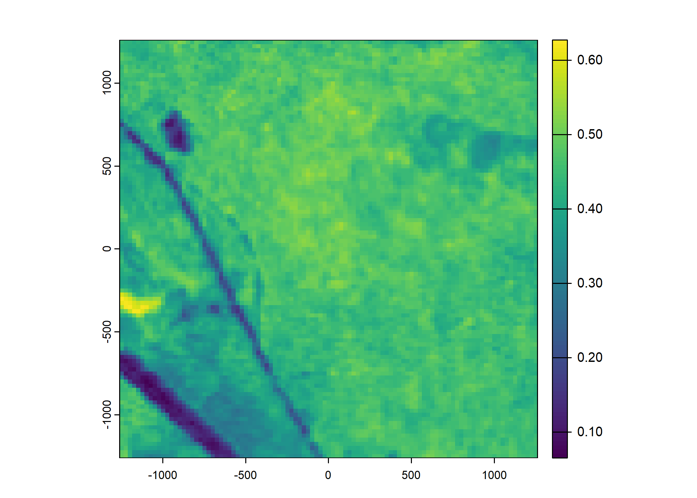


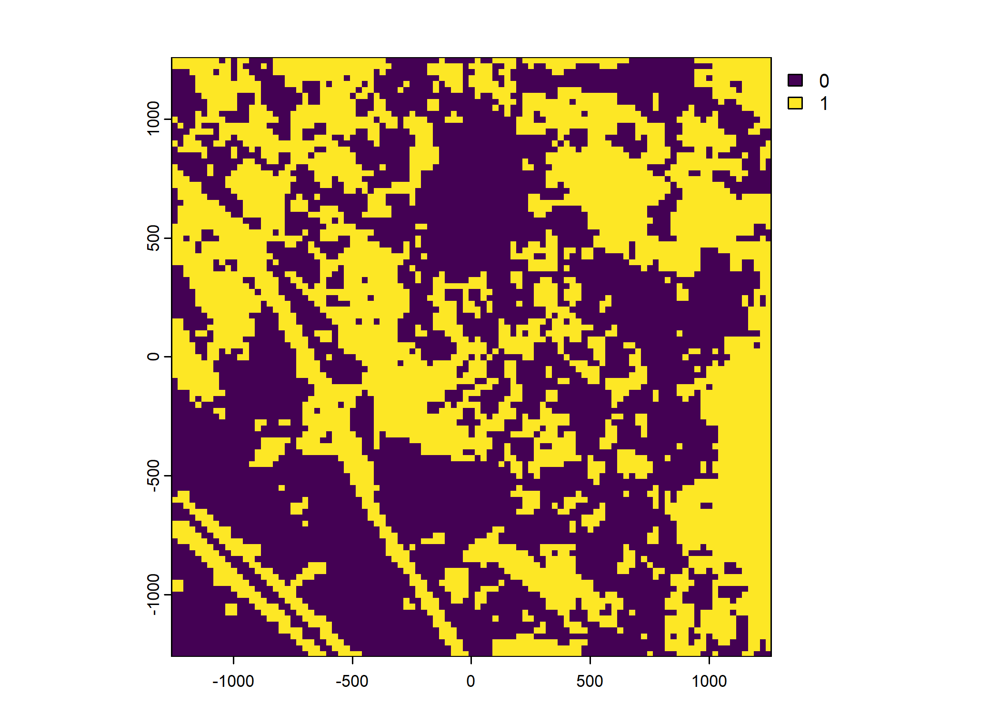

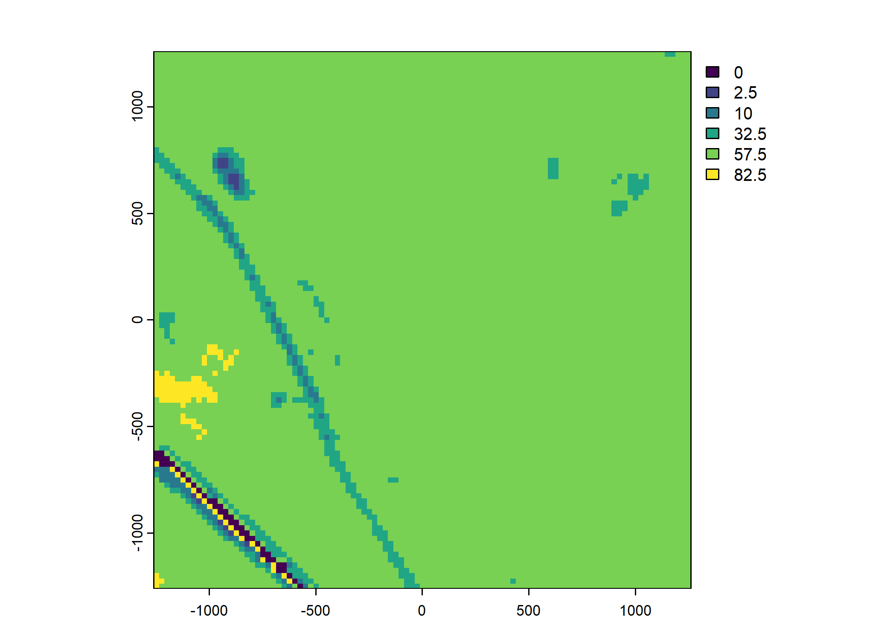
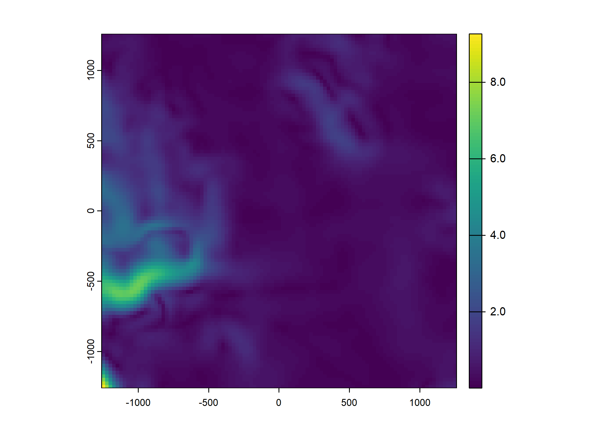

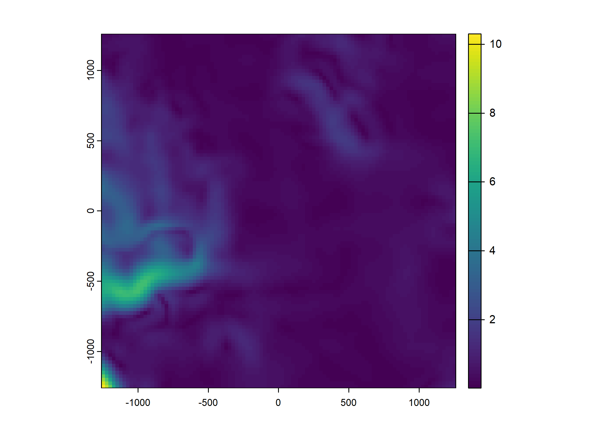


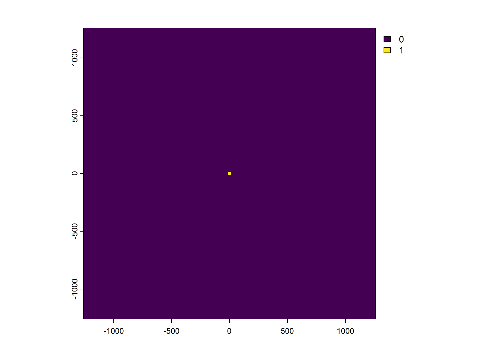
To save the object with all of the local covariates
To save some plots
Code
# for(i in 1:n_plots) {
# png(filename = paste0("ndvi_cent_", i, ".png"),
# width = 150, height = 150, units = "mm", res = 600)
# terra::plot(buffalo_data_covs$ndvi_cent[[i]])
# dev.off()
# }
#
# # for the pres layers
# for(i in 1:n_plots) {
#
# # change the 0 values to NA
# layer <- buffalo_data_covs$pres_cent[[i]]
# layer[layer == 0] <- 0.5
#
# ndvi_layer <- buffalo_data_covs$ndvi_cent[[i]]
# new_layer <- layer*ndvi_layer
#
# # save the plot
# png(filename = paste0("pres_cent_", i, ".png"),
# width = 150, height = 150, units = "mm", res = 600)
# terra::plot(new_layer)
# dev.off()
# }
#
#
# # other plots
#
# n_plots <- 1
#
# for(i in 1:n_plots) {
# png(filename = paste0("veg_herby_cent_", i, ".png"),
# width = 150, height = 150, units = "mm", res = 600)
# terra::plot(buffalo_data_covs$veg_herby_cent[[i]])
# dev.off()
# }
#
# for(i in 1:n_plots) {
# png(filename = paste0("canopy_cover_cent_", i, ".png"),
# width = 150, height = 150, units = "mm", res = 600)
# terra::plot(buffalo_data_covs$canopy_cover_cent[[i]])
# dev.off()
# }
#
# for(i in 1:n_plots) {
# png(filename = paste0("slope_cent_", i, ".png"),
# width = 150, height = 150, units = "mm", res = 600)
# terra::plot(buffalo_data_covs$slope_cent[[i]])
# dev.off()
# }Plot the step lengths and turning angles
Code
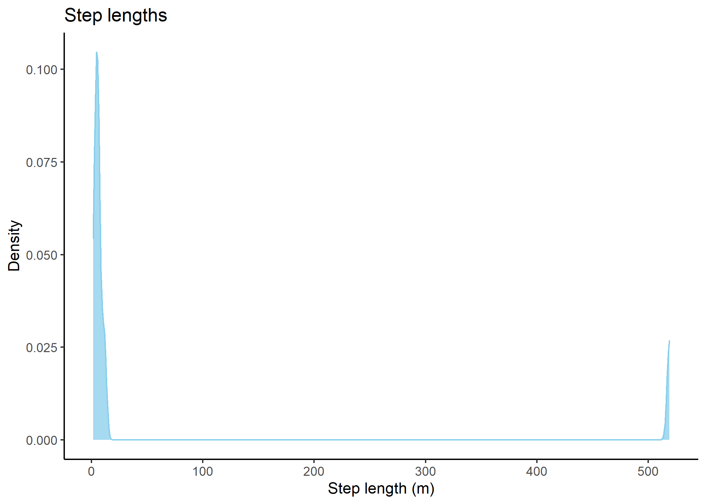
Code
# ggsave("outputs/step_length.png", height = 60, width = 120, units = "mm", dpi = 600)
# plot turning angles
buffalo_data_covs %>% ggplot() +
geom_density(aes(x = ta),
fill = "skyblue", colour = "skyblue", alpha = 0.75) +
scale_x_continuous("Turning angle (radians)",
breaks = c(-pi, -pi/2, 0, pi/2, pi),
labels = c(expression(-pi), expression(-pi/2), "0", expression(pi/2), expression(pi))
) +
scale_y_continuous("Density") +
ggtitle("Turning angles") +
theme_classic()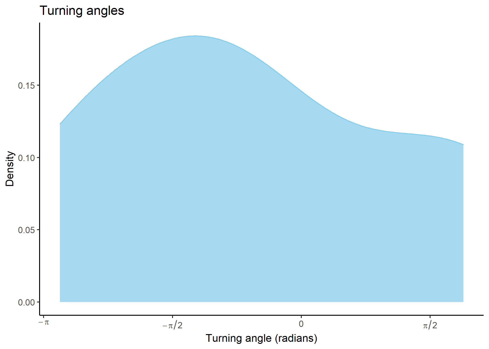